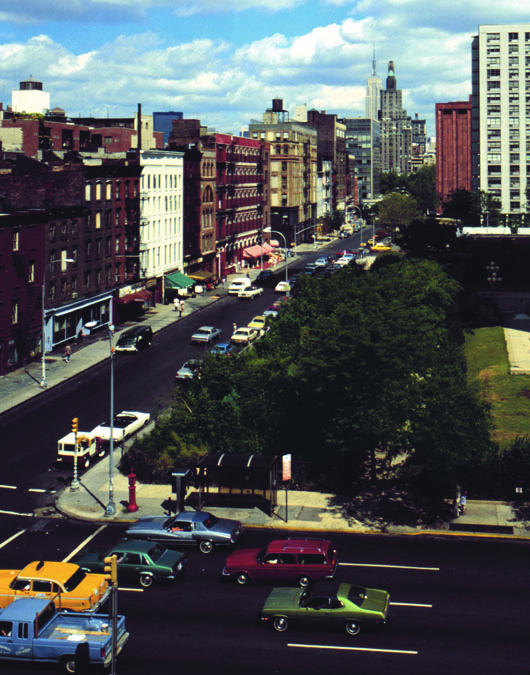
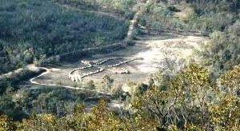
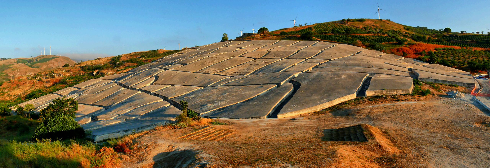
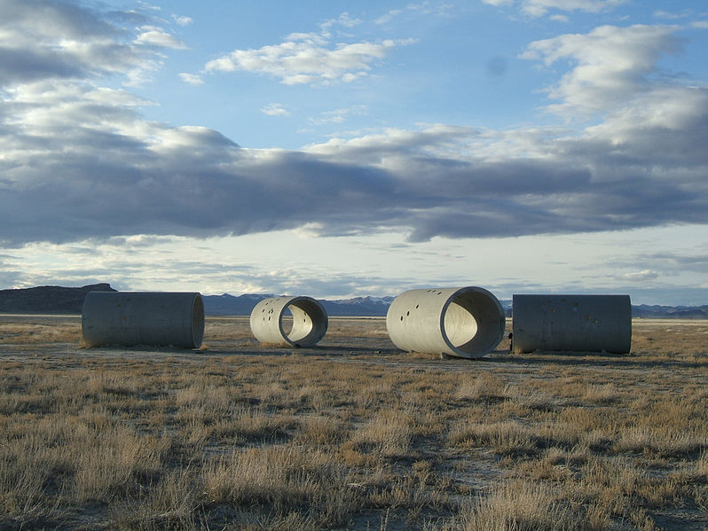
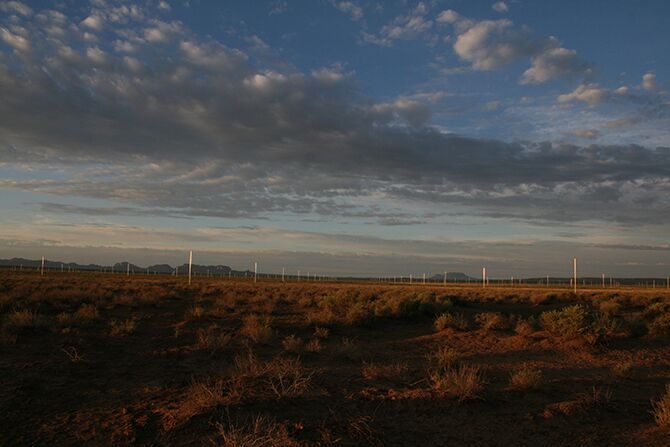

Land Art Gallery
|  |
Time Landscape by Alan SonfistAn example of natural phenomena as artwork. A clusture of native trees planted on a plot of land in lower Manhattan. A natural monument as a mirror to monuments to human activites. |
|  |
Bunjil by Andrew RogersA outline of an eagle made from large stones. Created in recognition of the native Wathaurong people, the eagle represents a Dreamtime creator diety. |
|  |
Cretto di Burri by Alberto BurriA landscape artwork created in memorial of a city that was destroyed by an earthquake. It was originally left unfinished due to lack of funding. Construction was restarted and finished in 2015 to honor what would have been the artist's 100th birthday. |
|  |
Sun Tunnels by Nancy HoltThe four cylinders that make up this piece are aligned so that the sunrise and sunset can be seen through them during the solstices. Various constellations are also recreated via holes drilled through the tunnels. |
|  |
Lightning Field by Walter de MariaThis work consists of a grid of 400 steel poles in a large field. The poles act as lightning rods, making the weather itself a part of the artwork. |